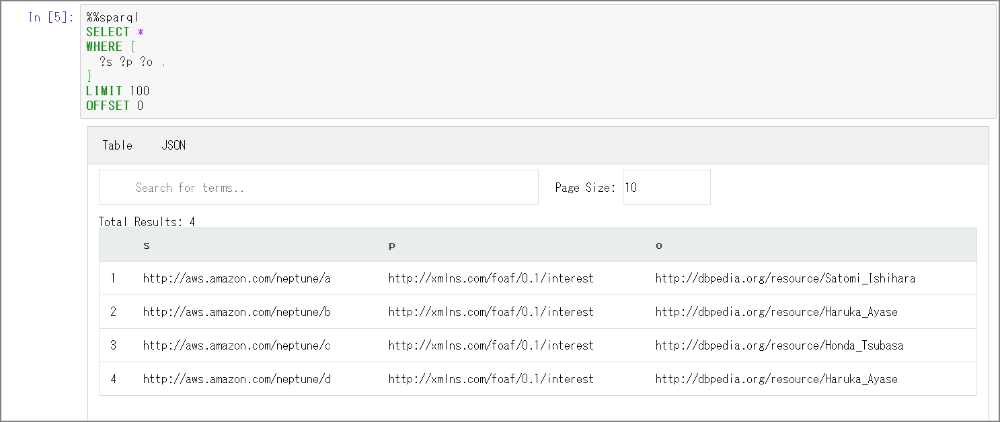

Amazon NeptuneのRDFデータをExportする
はじめに
awslabsに用意されているNeptune用のツールを使用してRDFデータをTurtleへエクスポートしてみる。
amazon-neptune-tools/neptune-export at master · awslabs/amazon-neptune-tools https://github.com/awslabs/amazon-neptune-tools/tree/master/neptune-export
詳細な使用方法についてreadme.mdをご参照ください。
amazon-neptune-tools/readme.md at master · awslabs/amazon-neptune-tools https://github.com/awslabs/amazon-neptune-tools/blob/master/neptune-export/readme.md
awslabs/amazon-neptune-tools https://github.com/awslabs/amazon-neptune-tools/blob/master/neptune-export/docs/export-rdf.md
注意点
Exporting an RDF Graph については At present neptune-export supports exporting an RDF dataset to Turtle with a single-threaded long-running query.と記載があります。データ容量とか関わってきますが、シングルスレッドで動作する関係上長時間のエクスポートとなる可能性があります。実行時間や実行対象のインスタンスの負荷状況については留意する必要があると思います。クローンで別インスタンスを立てる、Read Replica側を使うなどの考慮は必要かと。
環境確認
実際に実行してみます。検証のためにデータを最小限にしています。ロードされているデータは下記の通りです。
SELECT *
WHERE {
?s ?p ?o .
}
LIMIT 100
OFFSET 0

実行
outputのディレクトリの作成
mkdir -p /home/ec2-user/output
awslabsからneptune-exportツールのダウンロード
#sudo yum -y install git
git clone https://github.com/awslabs/amazon-neptune-tools.git
Mavenのインストール
sudo wget http://repos.fedorapeople.org/repos/dchen/apache-maven/epel-apache-maven.repo -O /etc/yum.repos.d/epel-apache-maven.repo
sudo sed -i s/\$releasever/6/g /etc/yum.repos.d/epel-apache-maven.repo
sudo yum install -y apache-maven
mvn --version
jarファイルのbuildを実行する
cd /home/ec2-user/amazon-neptune-tools/neptune-export
mvn clean install
targetディレクトリ配下にneptune-export.jarがビルドされる
[ec2-user@bastin neptune-export]$ ls -l target
total 62712
drwxrwxr-x 4 ec2-user ec2-user 28 Feb 24 05:13 classes
drwxrwxr-x 3 ec2-user ec2-user 25 Feb 24 05:13 generated-sources
drwxrwxr-x 3 ec2-user ec2-user 30 Feb 24 05:13 generated-test-sources
drwxrwxr-x 2 ec2-user ec2-user 28 Feb 24 05:13 maven-archiver
drwxrwxr-x 3 ec2-user ec2-user 35 Feb 24 05:13 maven-status
-rw-rw-r-- 1 ec2-user ec2-user 202719 Feb 24 05:13 neptune-export-1.0-SNAPSHOT.jar
-rw-rw-r-- 1 ec2-user ec2-user 64006996 Feb 24 05:14 neptune-export.jar
drwxrwxr-x 2 ec2-user ec2-user 4096 Feb 24 05:13 surefire-reports
drwxrwxr-x 3 ec2-user ec2-user 17 Feb 24 05:13 test-classes
[ec2-user@bastin neptune-export]$
neptune-export.shの実行
cd /home/ec2-user/amazon-neptune-tools/neptune-export
sh ./bin/neptune-export.sh export-rdf -e neptestdb.xxxxxxxxx.ap-northeast-1.neptune.amazonaws.com -d /home/ec2-user/output
※bin配下ではなく、一つ上のneptune-exportで実行する必要がある。neptune-export.jarを検索した上で変数に格納しているため。
jar=$(find . -name neptune-export.jar)
java -jar ${jar} "$@"
※neptuneのインスタンス名を指定しますが、「https」は抜いてください。怒られます。
Completed export-rdf in 0 seconds
An error occurred while exporting from Neptune:
java.lang.RuntimeException: org.eclipse.rdf4j.query.QueryEvaluationException: https: Name or service not known
at com.amazonaws.services.neptune.rdf.NeptuneSparqlClient.executeQuery(NeptuneSparqlClient.java:166)
at com.amazonaws.services.neptune.rdf.io.ExportRdfGraphJob.execute(ExportRdfGraphJob.java:31)
実行後はoutputディレクトリ配下にttlが出力されています。トリプルは一致していますね。
cd /home/ec2-user/output/1584768727668/statements
[ec2-user@bastin statements]$ cat statements-0.ttl
<http://aws.amazon.com/neptune/a> <http://xmlns.com/foaf/0.1/interest> <http://dbpedia.org/resource/Satomi_Ishihara> .
<http://aws.amazon.com/neptune/b> <http://xmlns.com/foaf/0.1/interest> <http://dbpedia.org/resource/Haruka_Ayase> .
<http://aws.amazon.com/neptune/c> <http://xmlns.com/foaf/0.1/interest> <http://dbpedia.org/resource/Honda_Tsubasa> .
<http://aws.amazon.com/neptune/d> <http://xmlns.com/foaf/0.1/interest> <http://dbpedia.org/resource/Haruka_Ayase> .
出力可能なフォーマット「turtle（デフォルト）」「nquads」「json(neptuneStreamsJson)」となります。
json(neptuneStreamsJson)の場合はこうなりました。
[ec2-user@bastin neptune-export]$ sh ./bin/neptune-export.sh export-rdf --format neptuneStreamsJson -e neptestdb.xxxxxxxxx.ap-northeast-1.neptune.amazonaws.com -d /home/ec2-user/output
Creating statement files
/home/ec2-user/output/1584769323164
[ec2-user@bastin statements]$ cat statements-0.json | jq
{
"eventId": {
"commitNum": -1,
"opNum": 0
},
"data": {
"stmt": "<http://aws.amazon.com/neptune/a> <http://xmlns.com/foaf/0.1/interest> <http://dbpedia.org/resource/Satomi_Ishihara> ."
},
"op": "ADD"
}
{
"eventId": {
"commitNum": -1,
"opNum": 0
},
"data": {
"stmt": "<http://aws.amazon.com/neptune/b> <http://xmlns.com/foaf/0.1/interest> <http://dbpedia.org/resource/Haruka_Ayase> ."
},
"op": "ADD"
}
{
"eventId": {
"commitNum": -1,
"opNum": 0
},
"data": {
"stmt": "<http://aws.amazon.com/neptune/c> <http://xmlns.com/foaf/0.1/interest> <http://dbpedia.org/resource/Honda_Tsubasa> ."
},
"op": "ADD"
}
{
"eventId": {
"commitNum": -1,
"opNum": 0
},
"data": {
"stmt": "<http://aws.amazon.com/neptune/d> <http://xmlns.com/foaf/0.1/interest> <http://dbpedia.org/resource/Haruka_Ayase> ."
},
"op": "ADD"
}
余談
最初はエラーが発生して正常完了出来なかったのですが、Stack Overflowに投稿したら修正してくれました。助かりました。
amazon web services - regarding about export of neptune data - Stack Overflow https://stackoverflow.com/questions/60429428/regarding-about-export-of-neptune-data